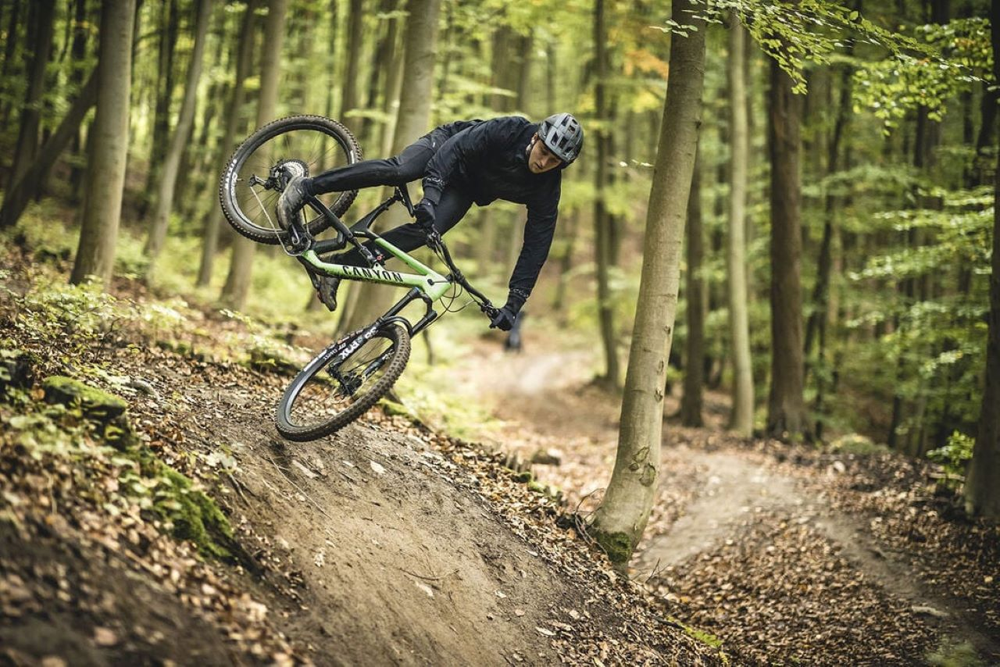
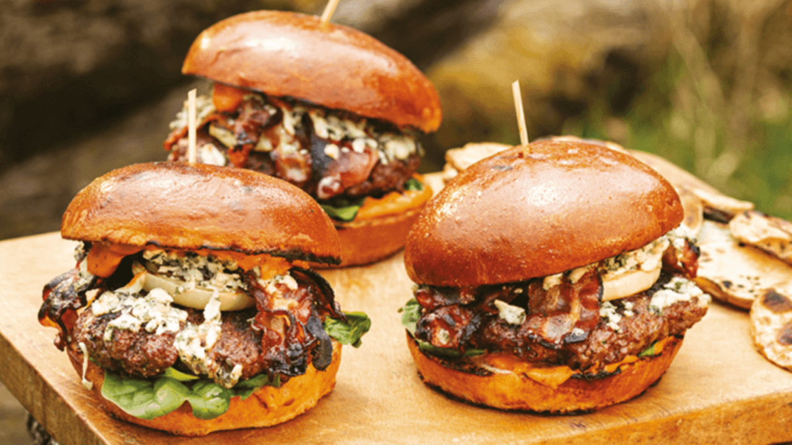

Michal Klein
Dobrý deň volám sa Michal Klein a vítam vas na mojej stránke. Rád by som vám povedal zopár informácii o mne a mojom živote. Študujem na súkromnej strednej odbornej škole Tatrantská akadémia, kde študujem odbor Inteligentné technológie.
Študium
Svoje Prve štyri roky som stravil na Základnej škole vo Švábovciach, po ktorích prešiel na spojenú školu Letnu v Poprade. Kde som úspešne dokončil základnú školu a bol prijatý na Súkromnú strednú odbornú školu kde do súčastnosti úspešne pokračujem v štúdiu
Skúsenosti
HTML CSS
V html a css su programovacie jazyky, ktoré ma bavia najviac. V týchto jazykoch
môžem prejaviť svoju kreativitu a tvorivosť no niekedy je to naopak
Zručnosti:
Dizajn stránky
Responzivita
Bootstrap
Databázy
V jazyku MySQL sa viem pohybovat a vytvarat tabulky a pracovat s nimi.
Taktiež viem použiť databázu napr na prihlasovací formular
Zručnosti:
Práca s tabúľkami
PHP
V programovacom jazyku PHP viem vytvoriť prihlasovaci a registračný formulár.
Viem kód prepojiť s databázov a vybrať z nej údaje. Taktiež ovládam základne funkcie a
Zručnosti:
Formuláre
Funkčnosť stránky
Prepojenie s databázou
Počitačové Siete
Počitačové siete su rozsiahlejšia téma ja však mam prax len v cisco packet tracery, kde viem vytvoriť topologiu
nakonfigurovať routre switche a spojazdniť topologiu aby boli packety správne odosielané
Zručnosti:
Konfigurácia siete
Výpočet Ip adries a práca s nimi
Vlany
DHCP
Ostatné
Adobe photoshop
Adobe Illustrator
Adobe XD
Certifikát cisco networking
Certifikát cisco CCNA 1
Kontakt
Na záver niečo o mojích záľubách a obľubách
Obľubený šport
Môj obľúbený šport je bicyklovanie tento šport mám rád preto lebo mam rad volnost kedy mozem ist hocikde na bicykli. Najviac si užívam jazdenie v prirode, nemám moc rád jazdenie po ceste, pretože to nieje až tak záživne
Obľubená hra
Je ťažke pre mňa vybrať čo je moja obľúbená hra, pretože mám rad veľa hier či už akčné, simulátori, alebo závodne hry. No keď si mam fakt vybrať obľubenú hru tak poviem GTA5 a Minecraft z toho dôvodu, že ich hram najviac

Obľubené jedlo
Medzi jedlami mam veľa, ktorím neodolám a musim ich mať často jednym z nich je dobre spraveny burger. Kedže som slovák, tak veľmi obľubujem slovenskú kuchyňu a najradšej z nej mám halušky s bryndzou
